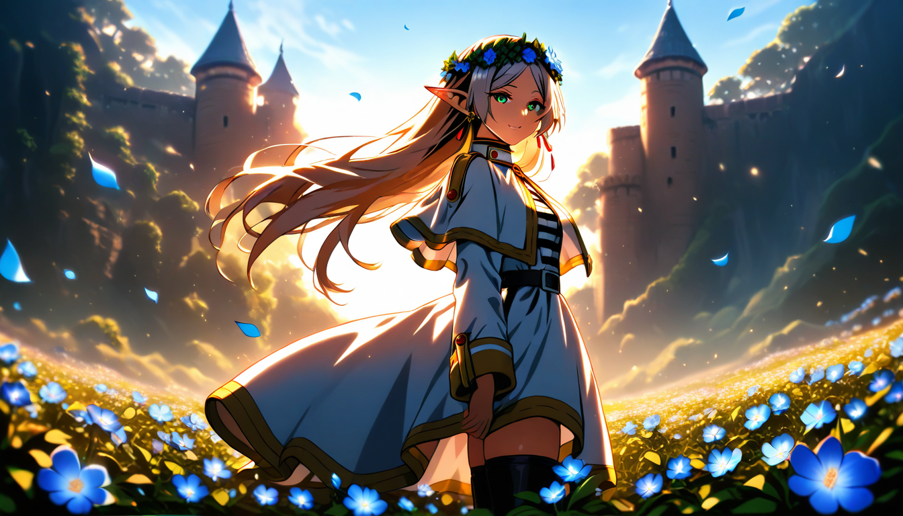
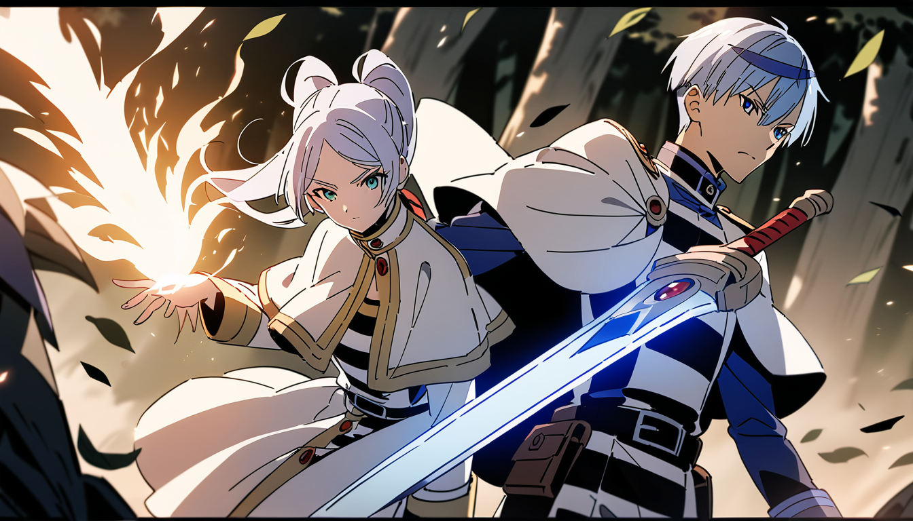

| 總分 | 完成後打勾 | 配分 | 分項描述 |
|---|---|---|---|
| 4 | Simple baseline - 完成ComfyUI建置 | ||
| 4 | Medium baseline - 完成芙莉蓮文生圖 | ||
| 2 | Strong baseline - 替換模型完成辛梅爾文生圖 | ||
| -10 | 沒有寫100字心得 |
1344 * 768
LoRA Strength : 1.0
Positive：masterpiece, best quality, high score, absurdres, 1girl, solo, elf, frieren, sousou no frieren, long hair, pointy ears, flower, blue flower, head wreath, smile, green eyes, earrings, jewelry, outdoors, sky, falling petals, peaceful atmosphere, warm lighting, soft focus, detailed background, classic frieren outfit, white and black outfit, gold ornament, thigh-high boots, capelet, fantasy robe, anime style, clean shading
Negative：lowres, bad anatomy, bad hands, text, error, missing finger, extra digits, cropped, worst quality, low quality, average score, signature, watermark, username, blurry, mutated hands, fused fingers, extra arms, extra person, male, 1boy, wrong outfit, watercolor, painterly, sketch, casual clothes
1344 * 768
LoRA1 Strength : 1.0
Positive：masterpiece, best quality, highres, anime style, semi side view, 1girl frieren, white capelet,
striped shirt dress, 1boy himmel, cloak uniform,
Negative：nsfw, lowres, bad anatomy, worst quality, text, username, watermark, signature, jpeg artifacts, blurry, deformed, back view only, characters facing away, obscured faces, fighting each other
